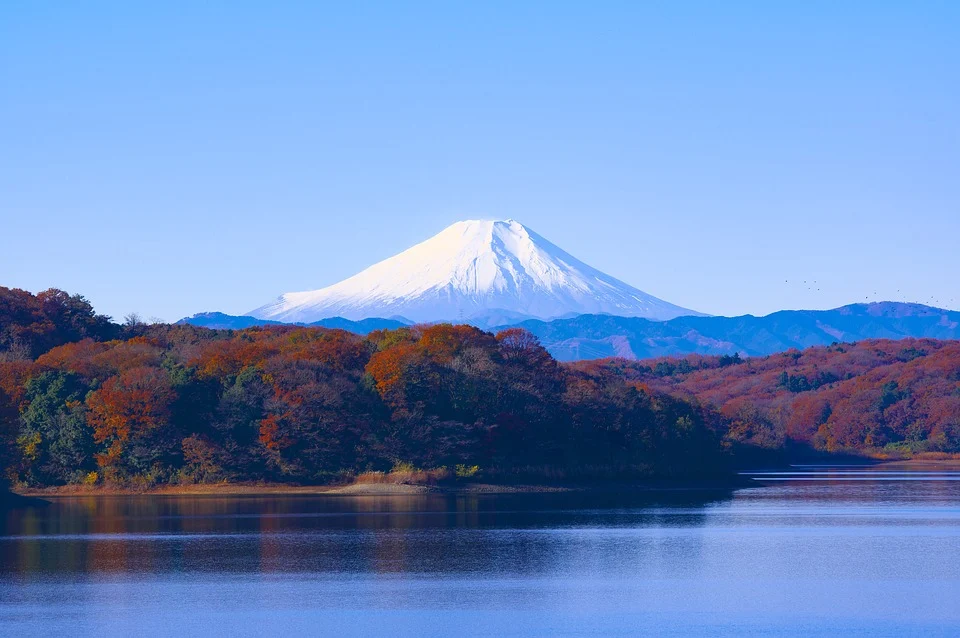
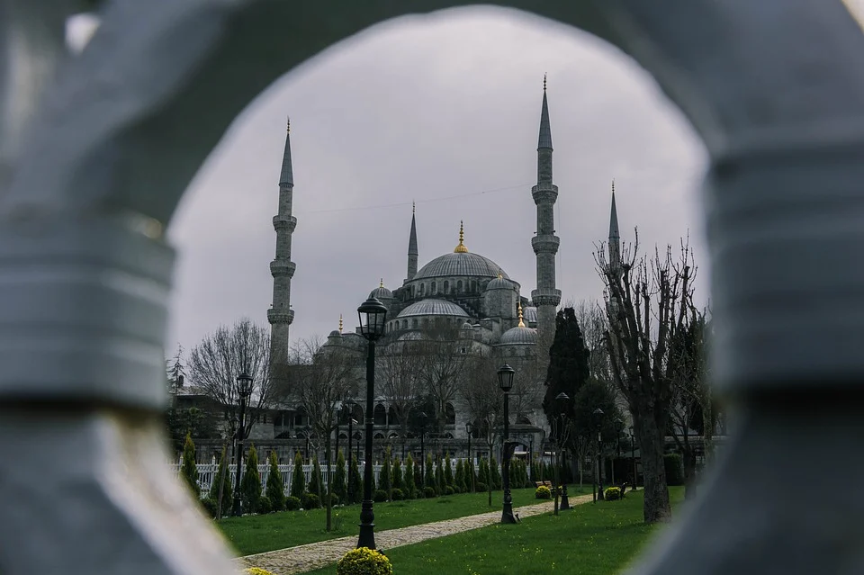
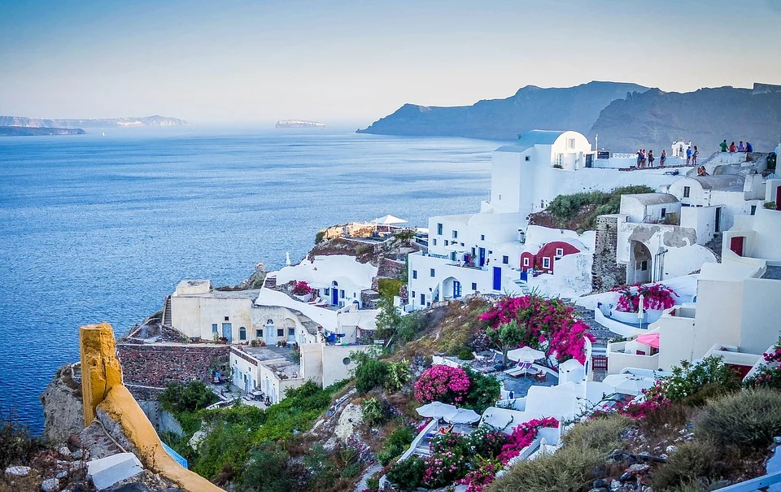

O monte Fuji (em japonês 富士山 Fuji-san) é a mais alta montanha da ilha de Honshu e de todo o arquipélago japonês. É um vulcão ativo, porém de baixo risco de erupção.
O monte Fuji localiza-se a oeste de Tóquio (de onde pode ser visto num dia limpo) próximo da costa do oceano Pacífico da ilha de Honshu, na fronteira entre as províncias de Shizuoka e de Yamanashi. Existem três pequenas cidades que envolvem o Monte Fuji, Gotemba a leste, Fuji-Yoshida a norte e Fujinomiya a sudoeste.
O monte Fuji é um dos símbolos mais conhecidos do Japão, sendo frequentemente retratado em obras de arte e fotografias e recebendo muitas visitas de alpinistas turistas.
Fonte: https://pt.wikipedia.org/wiki/Monte_Fuji

A Mesquita Azul ou Mesquita do Sultão Ahmed (em turco: Sultanahmet Camii) é uma mesquita otomana de Istambul, Turquia.[1] Foi construída entre 1609 e 1616 e está situada no bairro de Eminönü, no distrito de Fatih em frente da Basílica de Santa Sofia da qual se encontra separada por um formoso espaço ajardinado. É a única mesquita de Istambul que possui seis minaretes.
A Mesquita Azul é um triunfo em harmonia, proporção e elegância. Construída em um estilo clássico otomano, o seu magnífico exterior não faz sombra a seu suntuoso interior. Uma verdadeira sinfonia de belos mosaicos azuis de Iznik dão a este espaço uma atmosfera muito especial. Os imperadores bizantinos construíram um grande palácio onde se encontra hoje a Mesquita Azul. Em 1606 o sultão Amade I quis construir uma mesquita maior, mais imponente e mais bonita do que a Igreja de Santa Sofia.
Fonte: https://pt.wikipedia.org/wiki/Mesquita_Azul

Santorini Grecia – A ilha de Santorini, localizada na Grécia, é considerada um dos destinos mais românticos do país. Com as típicas casinhas brancas com telhado azul – as cores da bandeira grega – o local oferece paisagens deslumbrantes e, segundo os gregos, o pôr do sol mais bonito do mundo.
A geologia única da ilha de Santorini é formada devido a intensas atividades vulcânicas que aconteceram nos últimos milhares de anos. Uma destas destruiu as primeiras civilizações micênicas da região – como é possível ver no Museu Arqueológico de Akrotiri.
Santorini faz parte de um complexo de ilhas: Santorini (também conhecida por Thíra), Thirassiá, Asproníssi, Palea e Nea Kameni, sendo as duas últimas inabitadas por ainda sofrerem com a atividade vulcânica.
Fonte: https://www.dicasdeviagem.com/santorini/